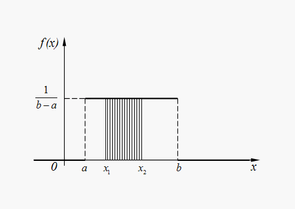
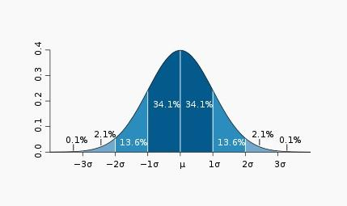

This topic covers Venn diagrams for modelling probability and the laws regarding P(AUB) notation. It also includes being able to model the sample space as a tree diagram, the Law of Total Probability and Bayes' Theorem. I have also had to learn about arrangements, combinations and permutations, including nCr and nPr notation.
This details the modelling of discrete random variables, i.e. a dice role, the mean, or expectation, variance and standard deviation of the variable.
The Binomial Distribution is a special discrete probability distribution such that it satisfies Bernoulli trials. It requires a set n (number of times the test is completed) and a distinct p (probability of the event happening). Since it satisfies a Bernoulli trial, there are only two outcomes and the result is modelled as - X∼B(n, p). The value is calculated as nCr * pr * (1 - p)n - r. The Poisson distribution is used when there is a set p (probability) and a distinct period within which this mean falls, i.e. number of blue cars passing a point per hour. It is modelled by - X∼Po(λ). To calculate a value for P(X ≤ k), use the formula: (λk * e-λ)⁄(k!).
These are distributions do not have distinct values for n. It is given by a probability density function (p.d.f) as f(x), where E(X) = ∫ab (x)f(x) dx. This is true because for continuous distributions - E(g(x)) = ∫ab g(x)f(x) dx. The equation for the variance is the same as for discrete distributions - E(X2) - E(X)2. The cumulative distribution function (c.d.f) = ∫xb f(t) dt, where t is a dumby variable for x.
The uniform distribution is a special continuous distribution, where the probability is equal for all possible outcomes, producing a graph looking like:

. The p.d.f is - f(x) = 1⁄(b - a). The E(X) = ½(a + b) and the Var(X) = 1⁄12(b - a). It is modelled by X∼U(a, b)
The normal distribution is another special continuous distrubtion, where the probability is equally distributed across the mean in a bell shape, producing a graph looking like:

You are not required to know the p.d.f for this distribution, but it is modelled by X∼N(μ, σ) it is given in tables during the exam. To calculate a value for P(X &li; k) you must convert it to the standardised normal - Z∼N(0, 1). To do this, apply the formula (X-μ)⁄σ.
This covers the laws of E(X) and adding multiple normal distributions - X + Y∼N(μx + μy, σx2 + σy2) and X - Y∼N(μx - μy, σx2 + σy2).
This topic looks at:
This tests the one hypothesis against another, such as the whether the mean is as stated and makes use of confidence intervals, confidence limits, p-values and significance levels, which all relate to the desired accuracy of the probability you are calculating.
This topic teaches you to calculate confidence limits for a normal distribution with known variance and the difference between the means of two normal distributions with known variance.
Estimators are used when the variance of a random variable is unknown, while sampling covers the sampling distributions used within statistics.
This adds on the work from S2, by including normal distributions whose variances are unknown, by using estimators.
Again, this grows on the work in S2 as it includes normal distributions with unknown variances, using estimators.
Finally, linear regression covers the principle of least squares, with particular reference to its use for estimating a linear relationship y = α + βx given a set of observations (x,y) where the observed x values are accurate and the observed y values are subject to independent random errors that are normally distributed with zero mean and specified variance. Confidence limits and hypothesis tests for α, β and the true value of y for a given value of x.